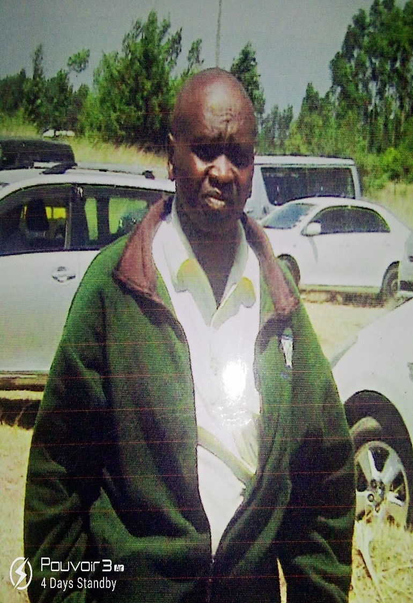
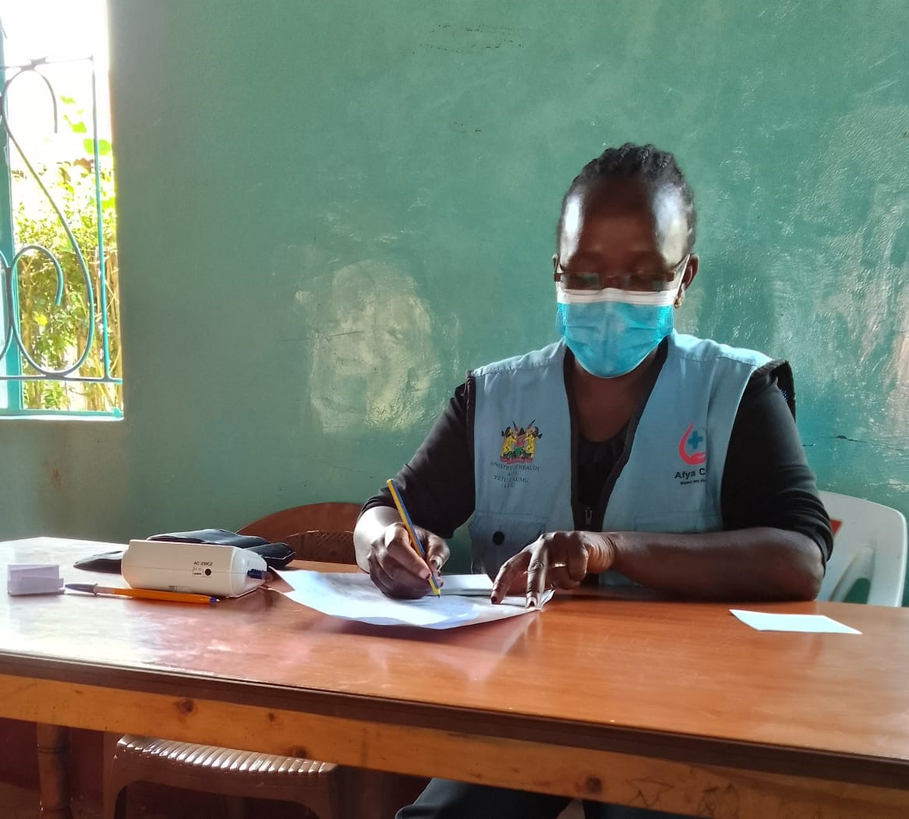
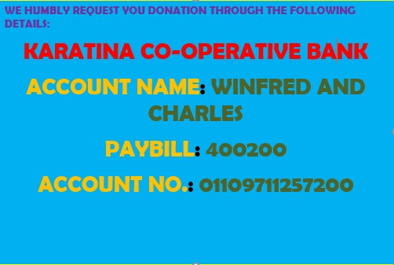

- Provides healthcare support to elderly and disabled individuals in the community
- Partners with other community organizations to provide a broader range of services to members
- Fosters a sense of community among members
- Promotes environmental conservation
- Raises awareness on emotional, social, and physical health matters
- Operates with high standards of governance, transparency, and accountability
- Provides volunteer opportunities for members to give back to the community.
Muguma Comunity health workers
ABOUT MUGAMA CHVs C.B.O
The above mentioned Community-Based Organization (CBO) is situated at Gitunduti Sub-Location, Magutu Division, Mathira East Sub-County, Nyeri County. It was started by local Community Health Volunteers (CHVs) with the vision of promoting and developing the community by enlightening them on health matters (emotional, social, physical) and environmental conservation. Currently, we work as volunteers and extend our personal generosity by giving our time, talents, skills, and other resources to strengthen community values. We are reaching out to you with the hope of seeking a partnership between our organizations, and we welcome your support in networking and lobbying from donors so that we can benefit with the technical advice and any other assistance from you. We invite you to visit our group and see firsthand the services we offer on a volunteering basis. During your visit, we can exchange ideas on how to improve the community's health habits as we believe that an ounce of prevention is worth a pound of cure. Mugama Community-Based Organization (CBO) is led by a team of dedicated individuals who are committed to the organization's mission, vision and objectives.
The leaders of Mugama Community-Based Organization (CBO) include:
- Charles Mwangi Maina - Chairperson
- Irene Kabugo Gakuu - Secretary
- Winfred Muthoni Mukuni - Treasurer
Each of these leaders brings a unique set of skills and experiences to the organization, and together they work to ensure that Mugama Community-Based Organization (CBO) operates with the highest standards of governance, transparency, and social accountability. They are supported by information technology specialist and volunteers who are equally committed to the organization's mission and vision.
THE WORK OF MUGUMA CBO
Leaders Of Muguma Cbo
Chairperson Of Mugama Community-Based Organization
Mwangi Maina, the Chairperson of Mugama Community-Based Organization (CBO) , is a compassionate and dedicated leader who has served his community with distinction. His commitment to improving the lives of the elderly and disabled members of society is unwavering, and he has worked tirelessly to ensure that Mugama Community-Based Organization (CBO) provides the best possible care and support to those who need it most. Under Charles' leadership, Mugama Community-Based Organization (CBO) has become a beacon of hope for the elderly and disabled, providing them with vital services such as healthcare, food, and housing. Charles' vision for the organization is to create a community where all members are valued and cared for, regardless of their age or ability. Improved community outreach: Charles has worked tirelessly to increase the organization's visibility in the community. He has implemented various outreach programs that help to identify and support elderly and disabled people who are in need of assistance. Increased donor engagement: Charles has taken a proactive approach to donor engagement, seeking out partnerships with stakeholders and community leaders to ensure that Mugama Community-Based Organization (CBO) has the resources it needs to continue its important work.
Irene Kabugo Gakuu, The Secretary Of Mugama Community-Based Organization (CBO)
Irene Kabugo Gakuu, the Secretary of Mugama Community-Based Organization (CBO), is a highly competent and efficient leader who has served her Community-Based Organization (CBO), the elderly, and disabled with dedication and excellence. Her attention to detail and excellent record-keeping skills have been invaluable in ensuring that Mugama Community-Based Organization (CBO) operates smoothly and efficiently. Irene's phone number, 0723255574, is always available to answer any questions or concerns that members or donors may have about the organization's activities. She is also instrumental in seeking donations from stakeholders and community leaders, ensuring that Mugama Community-Based Organization (CBO) has the resources it needs to continue its important work. As the Secretary of Mugama Community-Based Organization (CBO), Irene exemplifies the qualities of an excellent leader, demonstrating competence, efficiency, and a deep commitment to the organization's mission. We are proud to have her as part of the team and grateful for her contributions to this vital organization.
Winfred Muthoni Mukuni, The Treasurer Of Mugama Community-Based Organization (CBO)
Winfred Muthoni Mukomi, the Treasurer of Mugama Community-Based Organization (CBO), is a skilled and responsible leader who has served the Community-Based Organization (CBO), the elderly, and disabled with excellence. As the Treasurer, Winfred is responsible for managing the Community-Based Organization (CBO)'s finances and ensuring that all funds are used appropriately and transparently. Winfred's phone number, 0728702443, is always available to answer any questions or concerns that members or donors may have about the organization's finance.
LETTER
SOUP KITCHEN GITUNDUTI
PO Box 211
KARATINA
DATE...
TO...
P.O BOX...
Dear Sir/MAdam
REF: REQUEST FOR ASSISTANCE THROUGH COMMUNITY OUTREACH SERVICE PROGRAME
Gitunduti soup kitchen is a community based organization and nonprofit making initiative and affiliate of Mugana CHVS (CBO) certificate number: 07758 aiming at caregiving project, benefitting and feeding 12 most vulnerable elderly individuals within Gitunduti area and its environments.
Its execution plans is directly monitored by volunteers and overseen by chief coordinator and a clinical officer) who provides medical advice and counselling, visiting each home every week to clarify their emotional, social and physical environments.
The program was launched on 16 July 2020 during covid-19 era with the blessings of Magutu local administration. The Soup Kitchen prides warmth, companionship and shared communal experience on dining with others on issues on isolation and loneliness of elderly people.
We therefore decide to join hands with you individually, your institution, and also assist us in networking/ lobbying other organizations to achieve our and your objective, more essentially in community outreach service program.
We subscribe to the nation that where there is a will there is a way and requesting your support and assistance in form of moral, materials, cash donations for the growth and actualization of what we perceive to be a noble project.
Gitunduti Soup Kitchen hence continuously keep the doors open for more ideas to move forward and support the highly deprived individuals who are desperate to join but are turned away due to limited donations.
We believe though your support, soup kitchen Gitunduti mandate and goals that have been set will not only have been met but exceeded. We look forward for a positive response from you.
Thank you
Chief coordinator/ volunteer
Charles Mwangi Maina
0703510643
Clinical officer
Winfred Muthoni Mukuni
0728702443
SOUP KITCHEN GITUNDUTI BUDGET
The following key expenses are incurred three days in a week
| ITEMS | QUANTITY | KSH PER HEAD | TOTAL COST |
|---|---|---|---|
| Lunch: Tuesday | 12 | 150 | 1,800 |
| Thursday | 12 | 150 | 1,800 |
| Saturday | 12 | 150 | 1,800 |
| Volunteer's basic incentives | 4 | 300 | 1,200 |
| Professional counsellors | 2 | 500 | 1,000 |
| TOTAL | 7,600 |
OPEN DONATION
- BP machines 3 pcs 25,000
- Random blood sugar 25,000
- Firewood pickup/bundles 5,000
- Bar of soap 12pcs 2,500
Monitoring and evaluation (10% total budget)
PROPOSED
| ITEMS | QUANTITY | KSH PER HEAD | TOTAL COST |
|---|---|---|---|
| 1 lunch: Tuesday | 24 | 150 | 3,600 |
| Thursday | 24 | 150 | 3,600 |
| Saturday | 24 | 150 | 3,600 |
| Volunteer's basic incentives | 6 | 400 | 2,400 |
| Professional counsellors | 2 | 500 | 1,000 |
| TOTAL | 14,200 |
Proposed social economic empowerment income generating activity to 8 initial/ pioneer soup kitchen beneficiary: water harvesting within household roof tops: kitchen gardens /human/livestock drinking/consumption.
BILL OF QUANTITIES
| ITEM | SPECIFICATION | UNIT | QUANTITY | COST | TOTALS |
|---|---|---|---|---|---|
| Water tanks | 2000 litres | 1 | 8 | 17,000 | 136,000 |
| Tanks fitting/piping | 1 | 8 | 2,000 | 16,000 | |
| Gutters | 1 | 8 | 8,000 | 64,000 | |
| Hose pipes | Meters | 8 | 12,000 | 62,000 | |
| TOTAL | 278,000 |
LOCAL AND MINISTRATION LETTER
REPUBIC OF KENYA

OFFICE OF THE PRESIDENT
MINISTRY OF INTERIOR AND NATIONAL ANDMINISTRATION
MATHIRA EAST SUB-COUNTY
Telegram: DISTRICTER
TELEPHONE: 0728535958
Email: mukembasamuel@gmail.com
When replying please quote
Ref. No.: MAG/GIT/GEN/0012/314
OFFICE OF THE CHIEF
MAGUTU LOCATION
P.O. BOX 52 – 10101
KARATINA
DATE: 16TH MARCH 2023
TO WHOM IT MAY CONCERN
RE. GITUNDUTI SOUP KITCHEN
This is Community based organization Started on 16th July 2020 (During COVID 19) under MUGAMA CHVS (CBO) certificate entry No. – 07758 This office write to confirm the following;
- That it operate within Gitunduti sub location and its environment.
- That it is a non-profitable organization.
- That target most vulnerable elderly individuals in Gitunduti Sublocation and it environment.
- That it is being monitored by volunteers
- It provide medical advice and Counseling to people through a Clinical offer
NATIONAL HOSPITAL INSURANCE FUND (NHIF)
The Soup Kitchen program attracted the attention of the Nyeri County Government who offered an NHIF non-contributory status to beneficiaries with effect from February 2021. Ordinarily, each would be required to contribute Ksh 500 per month. This was a great motivating factor for us because it helps to allay fears and concerns about affording medical care thus allowing the space and focus on preventative care.
WE HAVE PARTNERED WITH NYERI COUNTY TO PROVIDE NHIF TO THE BENCH
WATER PROVISION
Access to clean running water was proving difficult and some of the reasons were:
- It emerged that some beneficiaries had settled on public land.
- That networks of the disconnected flow of water included other members of the public who were not listed as Soup Kitchen beneficiaries.
- Since water stopped flowing through some affected pipes so much time has lapsed that the underground piping system had become so damaged that complete or partial replacement was totally unavoidable.
- That due to significant arrears, some beneficiaries were unable to commit to much reduced payment schemes.
Through the intervention of some trustees every beneficiary now has water in his/her compound. The effect of this was even further reaching than we had envisaged as we later received messages of appreciation from people who wer not Soup Kitchen beneficiaries but benefited from the reconnection and resumption of water supply. It is our hope that with more donors, the Soup Kitchen can take on more vulnerable and needy people in the Magutu community.
Donation Details
WHY PEOPLE GIVE?
They are inherently generous, inborn basic that can't be removed. They want to make a difference. People give back to positive enthusiastic people, - is a feeling or showing a lot of excitement and interest about somebody/ something and spending a lot of time doing it. To Share a joy or lose. To be part of a community or organization. To receive peer approval and recognition. To gain tax and financial planning benefits. They are specifically asked.
WHY PEOPLE DON’T GIVE?
They don't see how their donation will make a difference. They don't feel wanted or needed. They receive a personalized appeal. A Past gift went unacknowledged. Timing wasn't right. The organization mission was not compelling for them. They weren't asked.
Detaild about About Muguma Comunity health Workers
In conclusion, Mugama Community-Based Organization (CBO) plays a vital role in providing support and assistance to elderly and disabled people, ensuring that they can live comfortably and independently. The organization's commitment to improving the lives of these vulnerable members of society is truly admirable, and their tireless efforts have made a significant impact on the community. However, Mugama Community-Based Organization (CBO) can only continue to provide these crucial services with the support of generous donors like you. Your contributions will make a real difference in the lives of those who need it most, and every donation, no matter how big or small, helps the organization continue its noble mission. By donating to Mugama Community-Based-Organization (CBO), you are not only making a positive impact on the lives of elderly and disabled individuals, but you are also helping to create a more compassionate and caring society. We encourage you to consider supporting this incredible organization and making a difference in the lives of those who need it most. Thank you for your generosity and kindness.